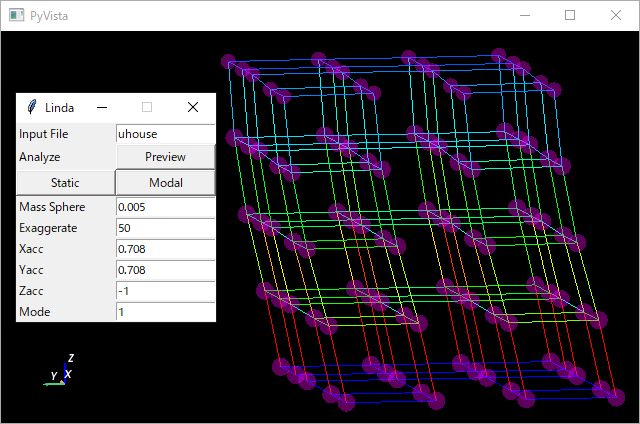

構造解析ツール
Linda

構造解析への理解を深めることを目的とした自主的なプロジェクトとして、有限要素解析ライブラリOpenSeesを用いた構造解析ツールLindaを作った。
現時点での機能や仕様は限定的である。
機能は静的解析と固有振動モード解析のみである。
仕様の面では例えば部材力の検定において座屈や横座屈は考慮しておらず、部材断面の垂直応力の、基準強度（降伏）に対する余裕度でのみ計算している。
今後機能を拡充すると共に、現在OpenSeesに頼っている解析の『核』の部分も自作してみたいと考えている。